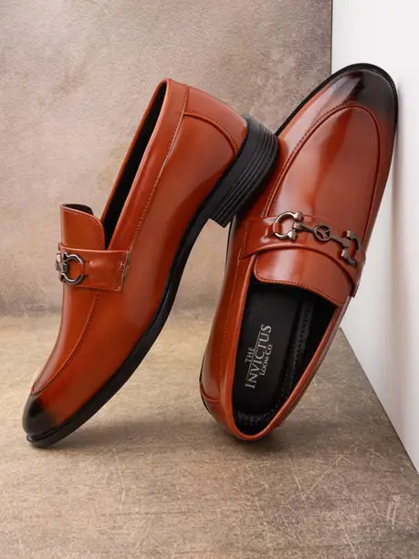
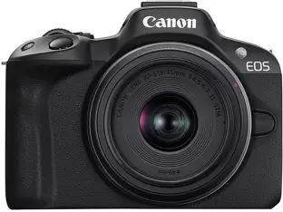

With Call Function,Touchscreen,Fitness & Outdoor and Battery Runtime: Upto 7 days
Capture every moment with stunning clarity and detail, immersing your audience in a world where time seems to stand still.
| IMAGE | VISIT LINK | DESCRIPTION | WATCH |
|
|
1.8" LCD display,Bluetooth Calling Smartwatch with AI voice assistance With Call Function,Touchscreen,Fitness & Outdoor and Battery Runtime: Upto 7 days |
VIEW | SHOES |
|  | A pair of brown solid round-toed formal derbys, has regular styling and lace-up fastening | VIEW | CAMERA |
|  | Bid adieu to blurry shots and embrace crystal-clear close-ups with this Canon EOS R50 Mirrorless Camera. Capture every moment with stunning clarity and detail, immersing your audience in a world where time seems to stand still. |